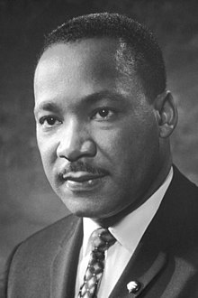

The Reverend
Martin Luther King Jr.
King in 1964.
Here's a time line of Dr. Martin Luther's life:
- 1929 - born in Atlanta, Georgia
- 1942 - He became the youngest asistant manager of a news paper delivery station.
- 1944 - King gave his first public speech during an oratorical contest.
- 1944 - He passed the entrance examination and was enrolled at the university.
- 1947 - The 18-year-old King chose to enter into ministry.
- 1948 - King graduated from Morehouse with a Bachelor of Arts (BA) in sociology
- 1951 - King began Doctoral studies in systematic theology at Boston university.
- 1954 - King was called as pastor of the Dertex Avenue baptist Church in
Montgomery, Alabama - 1953 - King married Coretta Scott on the lawn of her parents' house in her
hometown of Heiberger, Alabama - 1957 - King, Ralph Abernathy, Joseph Lowery, and other civil rights activist
founded the Southern Christian Leadership Conference(SCLC). - 1964 - King delivered the inaugural speech of a lecture series initiated at the
New School called
"The American Race Crisis." - 1968 - King went to Memphis, Tennessee, in support of
black sanitary work employees. - 1968 - King was fatally shot by James Earl Ray at 6:01pm., Thursday, April, as he stood on the
motel's second-floor balcony.
For further reading, click here...